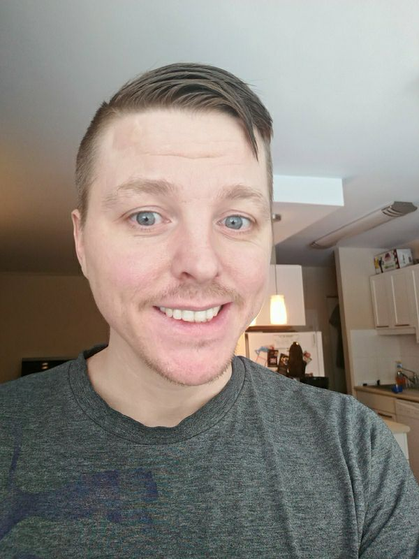
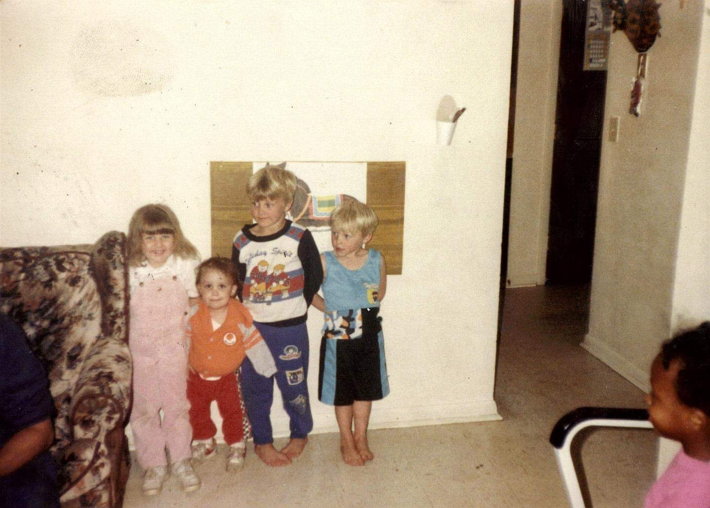

About
My name is Sam. I'm a student at Manitoba Institute of Trades and Technology in the software developement program. I enrolled in the program for a few reasons. I wanted to have an exciting career that is constantly challenging me, have an environment where I’m constantly learning new things, and most importantly I wanted to do something I enjoy for a living. With technology I like being able to connect with people, sharing thoughts and ideas, sharing photos, being able to watch a YouTube video from anywhere, playing games, and making new creations such as art, music, or making a program of some sort. 
Samuel Clair
Student at MITT
I grew up in a small city near Cincinnati, Ohio. I lived there pretty much all of my life. When I grew a bit older I decided to move to Winnipeg, Manitoba and I’ve been here since 2011. I am passionate about learning new skills and helping others when I can. Among the skills I like to learn are a few hobbies I have. I enjoy playing instruments, I’m only working on playing piano at the moment but I can play other instruments like guitar, bass, harmonica, and ukulele. Although I’m most likely a little out of practice with them now. I also enjoy making art, mostly just drawing but some digital painting as well. A couple of examples of my art are below. I sometimes like to play video games but mostly I've been playing VR games recently. Once in a while I enjoy making sourdough bread with a homemade starter or I’ll just use yeast if I feel the need. I’ll make things like hamburger buns, loaves/boules of bread, cinnamon buns, garlic sticks, or pizza. Lastly I like to collect and solve puzzle cubes like rubik’s cubes, megaminx, pyraminx, etc. If you notice in the digital painting below of my desk there are 3x3 and 2x2 rubik's cubes.